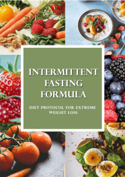

You Don’t Have a Slow Metabolism - You Have Insulin Resistance

Unshiftable weight gain is not “all part of getting old”. It’s a symptom that begins with consistently high insulin levels.
More than 1 in 3 Americans have insulin resistance. Yet this widespread epidemic is largely unknown because big pharma makes their money from diseases that are caused by insulin resistance… most notably… diabetes.
If you relate to these symptoms, don’t worry… there are a couple of easy ways to fix insulin resistance…
One solution is easy, and it won’t cost you anything… And, (halfway through this page) you’ll get a FREE eBook download to show you how to do it!
What Is Insulin Resistance?
When you eat a carbohydrate-heavy meal, your blood gets flooded with sugar molecules (glucose). Our cells want to feed on that sugar for energy – but can’t without the presence of insulin.
So the pancreas releases insulin… and when the cells have absorbed the sugar, the cells send a signal to the pancreas to stop producing insulin.
Insulin not only helps feed your cells, but also takes the energy-rich sugar and stores it in your liver and muscles. If you don’t burn that stored sugar, the liver turns it into fat.
Normal blood sugar levels are comparable to one teaspoon of sugar per 1.33 gallons of blood (which is the average amount of blood in the body). However, the average American consumes 31 teaspoons of sugar a day.
Over time, a high carb/sugar diet causes our cells to become resistant to insulin – which means the cells are unable to properly absorb sugar from the bloodstream.
Because the cells aren’t getting enough sugar, they don’t tell the pancreas to stop producing insulin.
So the pancreas keeps on producing insulin in an attempt to feed the cells. Excess insulin instructs your liver to manufacture fat while your appetite soars… and your metabolism dives.
Leaving you feeling tired… with a fatty liver.
Symptoms Of Insulin Resistance:
- Unshiftable weight gain
- Bulging belly or “beer belly”
- Fatigue
- Cravings for sugar (especially after dinner)
- Bladder issues (especially at night)
- Brain fog
- Inflammation
Insulin resistance also prevents cells from absorbing protein and potassium. Which causes protein deficient ailments such as:
- Loss of muscle mass
- Lacking in collagen, which causes premature aging
- Joint issues, disc issues (back issues)
And potassium deficient ailments such as:
- High blood pressure
- Heart arrhythmia
- Poor sleep
- Swelling of the face and ankles
- Constipation
- Gout
- Kidney Stones
What Happens If You Ignore The Symptoms Of Insulin Resistance?
Insulin resistance is also called ‘pre type-2 diabetes’. If you ignore insulin resistance, Type-2 diabetes is the next ailment to follow… this can be corrected with a specific diet, but if neglected, diabetes sets in which cannot be cured.
Insulin resistance is also the doorway to metabolic syndrome – which is a blanket term for diabetes, high blood pressure, obesity, heart disease and stroke.
Fatty Liver Disease
Insulin resistance causes a fatty liver… left untreated, causes cirrhosis of the liver (scarred liver).
The liver is responsible for over 800 bodily functions. One of those functions is the processing and metabolizing of fat.
When the liver is fatty and unhealthy, it starts taking ‘shortcuts’ with its responsibilities and quickly stores sugar directly as fat (before you get a chance to burn it for energy).
Insulin resistance and fatty liver disease are like husband and wife. Meaning, if you suffer from one of these ailments, you likely suffer from the other as well.
So if you want to lose weight and be healthy again, you need to start looking at ways to support your liver or controlling your blood sugar levels.
How To Fix Insulin Resistance & Fatty Liver With Intermittent Fasting
Studies reveal that stalling breakfast for as long as you can (intermittent fasting) helps to heal insulin resistance. A typical intermittent fast means skipping eating in the morning and lasting up until lunchtime. This gives your pancreas and liver an 16 hour+ break from insulin production.
Some people who want quicker results, fast for the whole day – and only eat dinner (one meal a day – OMAD).
The longer you fast the more the health benefits…
Benefits include:
- Insulin sensitivity
- Healthy intestines
- Heart health and optimum blood pressure
- Accelerated healing
- Healthier skin
- Mental health for the elderly
- Helps aid chemotherapy
- Significantly improves asthma
- Heals oxidative stress/Inflammation
And much more…
Here’s That FREE eBook I promised you…
The Intermittent Fasting Formula (click here to download)

This blueprint reveals everything you need to know about Intermittent Fasting…
- How to get started
- Learn how Intermittent Fasting works
- Choose between a wide variety of fasting options
- The amazing mental and physical health benefits,
- Diet protocols
- Effective tips to get better results fast…
And a fast track to healing your insulin resistance!
You’ll Never See Fasting Advertised For Health
The reason why intermittent fasting is still largely unknown is because there’s no money to be made telling people NOT to consume things.
The breakfast industry is worth billions – so they spread propaganda like “breakfast is the most important meal of the day”. This type of propaganda is called ‘astroturfing’ check out this article that explains it all.
An Alternative To Fasting…
If skipping breakfast or only eating one meal a day sounds a bit too hard, another option is the ketogenic diet. Which is essentially ‘carb fasting’.
The reason the keto diet is so good for treating insulin resistance is because it promotes a very low carbohydrate intake. With the absence of carbs, the body doesn’t trigger a spike in insulin – giving your liver a break and your cells a chance to become sensitive to insulin again.
The Keto Diet Does A Lot More Than Treating Insulin Resistance
Benefit #1: The keto diet can reverse insulin resistance, and even reverse type 2 diabetes
Many studies show minimizing carb intake benefits people with diabetes. In fact, the keto diet was the standard diabetes treatment before the discovery of injectable insulin. [8-9]
Consider the following:
Research published in Annals of Internal Medicine found that when type 2 diabetics went low-carb for two weeks, they improved insulin sensitivity by up to 75%. [10]
And another study involving 21 individuals with type 2 diabetes found that seven of them could stop their diabetes medication within 16 weeks of going keto. [11]
Benefit #2: The keto diet can help you obtain (and maintain!) a healthy weight
The keto diet is excellent for losing fat and keeping it off. For example, a meta-analysis of 13 randomized controlled trials concluded that:
“Individuals assigned to a VLCKD [very low carbohydrate ketogenic diet] achieve a greater weight loss than those assigned to an LFD [low-fat diet] in the long term; hence, a VLCKD may be an alternative tool against obesity.”[1]
What’s more, randomized controlled trials found that the keto diet produces up to three times as much weight loss as a high-carb, low-fat diet.[2-3]
In other words, if you want to lean down but are sick and tired of failing your weight loss attempts, the keto diet may be the key to a slim figure.
Benefit #3: The keto diet boosts brain function
When going keto, most people experience an improvement in their brain function and mental clarity.[4-5]
The keto diet supports your brain in various ways and for various reasons. A major reason is that ketosis enhances mitochondrial functioning. [6]
Researchers believe ketosis stimulates the formation of new mitochondria in your brain, especially in your hippocampus. [7] This aids your mental clarity, memory, and energy levels.
Benefit #4: The keto diet reduces heart disease risk
While saturated fat and cholesterol are often alleged to clog arteries, these compounds do not cause heart disease. [12-14]
That’s good news for keto dieters because this eating style loads up on high-fat foods such as eggs, nuts, and bacon.
In fact, the keto diet reduces heart disease risk for four main reasons. The keto diet: [15-18]
- Stimulates weight loss
- Elevates levels of the “good” HDL cholesterol
- Decreases blood triglycerides levels
- Reduces blood pressure
Benefit #5: The keto diet boosts mental well-being
The keto diet benefits various mental disorders and conditions. For example, research shows the keto diet: [19-22]
- Has an antidepressant effect
- Improves the behavior of children with autism
- May stabilize mood in bipolar disorder patients
- Has cured one case of schizophrenia
Benefit #6: The keto diet can be therapeutic for various neurological diseases
These include Alzheimer’s, ALS, Parkinson’s disease, infantile spasms (West syndrome), and epilepsy. [23-26]
Benefit #7: The keto diet may prevent and fight some types of cancer
Most cancer cells rely on glucose as fuel, which is why keto diets may help prevent and fight the disease.
For instance, when in-vitro cancer cells only receive ketones and fat for energy, they often die. [27] Plus, various studies show the keto diet helps fight brain cancer. [28-29]
Benefit #8: The keto diet can improve gut health and bowel disorders
Many bowel diseases are the result of gut pathogens and infections, both of which rely on glucose for energy.
By minimizing your carb intake, you stave off these infections and pathogens. That’s how going keto diet can improve gut health and treat bowel disease.
Custom Keto – The Easiest Diet You’ve Ever Tried
If you’re looking to reverse insulin resistance and lose fat… the easiest and most delicious way to achieve this is this new custom keto meal plan.
To create this service, certified nutritionists, personal trainers, and chefs united to develop keto meal plans that are effective, convenient, cost-efficient, and enjoyable.
By listing your favorite foods, the custom keto plan generates delicious tailor made recipes that fit your exact macro needs.
Since their launch in January 2019, hundreds of clients have already transformed their figure and health with the benefits a proper keto diet can offer.
If you’re ready to reap all these incredible health benefits, you can get your customized keto meal plan for the price of just three movie tickets.
Click the link below to get started.
==>Lose Fat and Get Healthy Without Giving Up Your Favorite Foods or Starving Yourself!
Remember that you’re covered by their 100% satisfaction guarantee.
It’s simple. If, for any reason or no reason at all, you’re not delighted with your custom meal plans, you’ll get a full and immediate refund.
In other words, by claiming your custom meal plan today, you have nothing to lose and a lot to gain (except for fat!).
So, if you want to enhance your health and figure while eating tasty meals you’ll look forward to, click here to get your custom keto meal plan.

References:
- Br J Nutr. 2013 Oct;110(7):1178-87.
- J Pediatr. 2003 Mar;142(3):253-8.
- N Engl J Med. 2003 May 22;348(21):2074-81.
- Appetite. 2009 Feb;52(1):96-103.
- Neurobiol Aging. 2012 Feb;33(2):425.e19-27.
- J Child Neurol. 2013 Aug; 28(8): 1027–1033.
- Biochim Biophys Acta. 2009 Mar;1790(3):208-12.
- Nutr Metab (Lond). 2008 Dec 19;5:36.
- Nutrition. 2015 Jan;31(1):1-13.
- Ann Intern Med. 2005 Mar 15;142(6):403-11.
- Nutr Metab (Lond). 2005; 2: 34.
- Am J Clin Nutr. 2010 Mar;91(3):535-46.
- Am J Clin Nutr. 2015 Aug;102(2):276-94.
- Ann Intern Med. 2014 Mar 18;160(6):398-406.
- Arch Intern Med. 2004 Oct 25;164(19):2141-6.
- J Nutr. 2006 Feb;136(2):384-9.
- N Engl J Med. 2003 May 22;348(21):2082-90.
- Am J Clin Nutr. 2009 Jul;90(1):23-32
- Biol Psychiatry. 2004 Dec 15;56(12):981-3.
- Pediatr Neurol. 2009 Aug;41(2):111-3.
- J Child Neurol. 2003 Feb;18(2):113-8.
- Med Hypotheses. 2001 Dec;57(6):724-6.
- Nutr Metab (Lond). 2009 Feb 26;6:10.
- BMC Neurosci. 2006 Apr 3;7:29.
- Brain Res. 2009 Aug 25;1286:25-31.
- Nutr Metab (Lond). 2009 Aug 10;6:31.
- Lancet Neurol. 2004 Jul;3(7):415-20.
- Carcinogenesis. 2014 Mar; 35(3): 515–527.
- J Cancer Res Ther. 2009 Sep;5 Suppl 1:S7-15.
- J Am Coll Nutr. 1995 Apr;14(2):202-8.